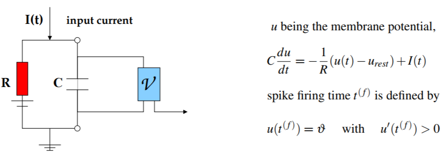
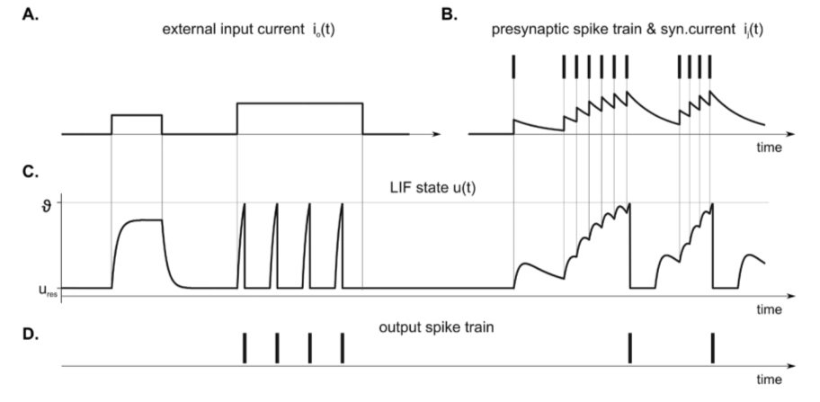

Machine Learning and Neural Networks
Roberto Santana
Department of Computer Science and Artificial Intelligence
University of the Basque Country
Neural Network Paradigms: Table of Contents
Multilayer perceptron
Characteristics
- Provide a general framework for representing non-linear functional mappings between a set of input variables and a set of output variables.
- Mainly used for supervised ML.
- Extends the representation capabilities of the perceptron.
- Contrary to the perceptron, it includes one or more hidden layers.
- Different activation functions can added to the network.
- Extensively applied to a variety of practical domains.
C. M. Bishop. Neural Networks for Pattern Recognition. Oxford University Press. 2005.
R. Rojas. Neural networks: a systematic introduction. Springer Science & Business Media. Chapter 7. 2013.
Perceptron
Learning
- Non-linear activation units are introduced.
- Weights are updated as:
\[ w_i(t+1) = w_i(t) + \left (d_j -y_j(t) \right) x_{j,i}, \]
where \( d_j \) is the desired output
Modern perceptron

H. Wang, B. Raj, and E. P. Xing. On the Origin of Deep Learning. arXiv preprint arXiv:1702.07800. 2017.
Multi-Layer perceptron
Properties
- Perceptron: Single neuron.
- One-layer neural network: Putting perceptrons side by side.
- Multi-layer neural network (MLP): Stacking one one-layer NN upon the other.
- Universal approximation property: An MLP can represent any function.
K. Kawaguchi. A multithreaded software model for backpropagation neural network applications. Ph. D. Thesis. 2000.
Multi-Layer perceptron

Network function
\[ \begin{align} h({\bf{x}}) =& g \left ( w_1 h_1({\bf{x}}) + w_2 h_2({\bf{x}}) + c \right ) \\ =& g \left ( w_1 g(\theta_1 x_1 + \theta_2 x_2 + b_1) + w_2 g(\theta_3 x_1 + \theta_4 x_2 + b_2) + c \right ) \end{align} \]
Q. V. Le. A Tutorial on Deep Learning. Part 1: Nonlinear Classifiers and The Backpropagation Algorithm. 2015.
Multi-Layer perceptron

A. K. Jain, J. Mao, and K. M. Mohiuddin. Figure. Artificial neural networks: A tutorial. Computer. Vol. 29 No. 3. Pp. 31-44. 1996.
Multi-Layer perceptron
Properties
- Boolean approximation: An MLP of one hidden layer can represent any boolean function exactly.
- Continuous approximation: An MLP of one hidden layer can approximate any bounded continuous function with arbitrary accuracy.
- Arbitrary approximation: An MLP of two hidden layers can approximate any function with arbitrary accuracy.
Multi-Layer perceptron
Backpropagation
Characteristics
- Backpropagation provides a computationally efficient method for computing the derivatives.
- At intermediate nodes, it computes the gradients of each set of local weights.
- Once the derivatives are found, different optimization schemes (e.g., gradient descent) can be used to update the weights.
Goals
- The backpropagation algorithm is used to calculate the gradient of the error of the network with respect to the network's modifiable weights.
- In the literature, the term is also used to refer to an algorithm that looks for the minimum of the error function in weight space.
- In this broader interpretation, it evaluates the derivatives of the errors with respect to the weights, and use these derivatives to find the weight values that minimize the error.
- For an arbitrary network, there is no guarantee that the algorithm will converge to the optimum.
C. M. Bishop. Neural Networks for Pattern Recognition. Oxford University Press. 2005.
R. Rojas. Neural networks: a systematic introduction. Springer Science & Business Media. Chapter 7. 2013.
Perceptron
Learning
At epoch \(t\), predictions are made as:
\[
y^j(t) = \begin{cases} 1, & \mbox{if } \sum_{i=1}^{n+1} w_i(t) x^j_i \geq 0 \, \forall j \\
0, & \mbox{otherwise}
\end{cases}
\]
The error of the prediction is computed as:
\[
MSE(t) = \frac{1}{N} \sum_{j=1}^N \left ( d^j-y^j(t) \right )^2
\]
Weights are updated as:
\[
w_i(t+1) = w_i(t) + \left ( d^j -y^j (t) \right ) x_{j}^{i},
\]
Input and Notation
- Inputs:
- Dataset \(X\) where \(x_i^j\) is the value of variable \(x_i\) for instance \(x^j\) and \(x_{n+1}^j=1 \, \forall j\)
- \(d^j\) is the class of instance \(x^j\) (desired output).
- Notation:
- \( w_i(t) \): Weight associated to feature \(i\) at time \(t\) .
- \(y^j\) is the output produced by the perceptron (predicted class).
F. Rosenblatt. The perceptron: a probabilistic model for information storage and organization in the brain. Psychological review, 65(6):386. 1958.
Multi-Layer perceptron
Backpropagation
Recursive computation
\( h^1 = x \)
\( h^2 = g \left( (\theta^1)^T h^1 + b^1 \right) \)
\( \dots \)
\( h^{L-1} = g \left( (\theta^{L-2})^T h^{L-2} + b^{L-2} \right) \)
\(h^{L}\) = \(g \left( (\theta^{L-1})^T h^{L-1} + b^{L-1} \right) \).
MLP
Network function
\[ \begin{align} h({\bf{x}}) =& g \left ( w_1 h_1({\bf{x}}) + w_2 h_2({\bf{x}}) + c \right ) \\ =& g \left ( w_1 g(\theta_1 x_1 + \theta_2 x_2 + b_1) + w_2 g(\theta_3 x_1 + \theta_4 x_2 + b_2) + c \right ) \end{align} \]
Q. V. Le. A Tutorial on Deep Learning. Part 1. Nonlinear classifiers and the backpropagation algorithm. 2015.
MLP Backpropagation

A. K. Jain, J. Mao, and K. M. Mohiuddin. Figure. Artificial neural networks: A tutorial. Computer. Vol. 29 No. 3. Pp. 31-44. 1996.
Multi-Layer perceptron
Backpropagation
Recursive computation
- Perform a feedforward pass to compute \( h^1, h^2, h^3, \dots, h^L \).
- For the output layer compute: \[ \delta_1^L = 2(h^L-y) g' \left( \sum_{j=1}^{S_{L-1}} \theta_{1j}^{L-1}h_j^{L-1}+b_1^{L-1} \right) \]
- Perform a backward pass for \( l = L-1, L-2, \dots, 2. \; \; \) For each neuron \(i\) in layer \(l\), compute: \[ \delta_i^L = \left( \sum_{j=1}^{S_{l+1}} \theta_{ji}^{l} \delta_j^{l+1} \right) g' \left( \sum_{j=1}^{S_{l-1}} \theta_{ij}^{l-1}h_j^{l-1}+b_i^{l-1} \right) \]
- The desired partial derivatives can be computed as \( \Delta \theta_{ij}^{l} = h_j^{l} \delta_i^{l+1} \) and \( \Delta b_i^{l} = \delta_i^{l+1} \).
Notation
\( h(x) \): decision function
\( g \): activation function
\( \theta^l_{ij} \): weight at layer \(l\)-th between input \(j\)-th and neuron \(i\)-th in layer \((l+1)\)-th
\( b_i \): bias of neuron \( i \)
\( s_l \): number of neurons in the layer
Q. V. Le. A Tutorial on Deep Learning. Part 1. Nonlinear classifiers and the backpropagation algorithm. 2015.
R. Rojas. Neural networks: a systematic introduction. Springer Science & Business Media. Chapter 7. 2013.
Competitive learning
Objective
- The goal of of competitive learning is to group the data by forming clusters.
- It is expected that the similarities of instances within the same group found by the network is as great as possible.
- The differences between instances in different classes is as great as possible.
- Generally, no label are used in training the network (i.e., unsupervised learning).
Characteristics
- A layer of neurons that are identical except that their weights are different.
- Neurons compete amongst themselves to be activated.
- Only one neuron is activated at each time (winner-takes-all neuron).
- The learning mechanism strengths the mapping between certain neurons and particular inputs.
- They are used for data mining, data visualization, dimensionality reduction and exploratory data analysis.
Competitive learning
Characteristics
- The learning rule is a variant of Hebbian learning (with weight decay).
- A potential problem is that some neurons may continue to gain the competition while other neurons are never selected.
Typical learning
- The output of all neurons is computed as
\[ y_i = \sum_{j} w_{i,j} x_j, \forall \; i \] - Then, the weights for the winning neuron \(i\) are updated as: \[ \Delta w_{i,j} = \eta (x_j - w_{i,j}) \]
and the winner neuron is computed as the one whose prediction is the best.
Vector Quantization

C. Karri and U. Jena. Fast vector quantization using a bat algorithm for image compression.Engineering Science and Technology, an International Journal. Vol. 19. No. 2. Pp. 769-781. 2016.
Vector Quantization with competitive learning NNs

H. C. Howard et al. Competitive learning algorithms and neurocomputer architecture.IEEE Transactions on Computers. Vol. 47. No. 8. Pp. 847-858. 1998.
Learning Vector Quantization

Characteristics
- Codebook vectors represent class regions.
- Each codebook vector is defined by the weights between one neuron and all the inputs.
- Each prototype represents a region labelled with a class.
- Prototypes are localized in the centre of a class or decision region ("Voronoi cell") in the input space.
- The regions are separated by the hyperplanes between the prototypes.
- A class can be represented by an arbitrary number of prototypes.
- One prototype can only represent a single class.
Competitive learning algorithms
LVQ variants and developments
- Different variants of LVQ algorithms have been proposed.
- They mainly differ in the learning rules used.
- LVQ1, LVQ2.1 and LVQ3 proposed by Kohonen used heuristic learning rules.
- Other extensions use Margin Maximization and Likelihood-ratio maximization.
D. Nova and P. A. Estevez. A review of learning vector quantization classifiers. Neural Computing and Applications 25.3-4. Pp. 511-524. 2014.
LVQ Learning
- Learning consists of modifying the weights in accordance with adapting rules.
- Given an input, the winner neuron is moved closer if it correctly classifies the input or moved in the oppossite direction otherwise.
- The magnitudes of these weight adjustments are controlled by a learning rate which can be lowered over time in order to get finer movements in a later learning phase.
- The class boundaries are adjusted during the learning proces correspond to the class of the prototype.
- The classification is optimal if all inputs fall within a cell with the right class.
Competitive learning algorithms for quantization (Summary)
Learning Vector Quantization
- Supervised learning algorithm.
- Prototypes will serve to define class regions.
- The goal is to minimize the number of misclassifications.
- The computational cost depends on the number of prototypes.
- They can be used for multi-class problems.
Vector Quantization
- Unsupervised learning algorithm.
- The goal is learning prototypes (codevectors) that minimize the reconstruction error.
- Very related to self-organizing maps.
- It is used for clustering, data compression, and visualization.
Neural Networks
Self Organizing Map (SOM)

Characteristics
- Used for unsupervised classification and as a visualization tool.
- Mainly applied for dimensionality reduction of high-dimensional data.
- In the reduced space, it retains the topological similarity of data points.
- In most applications, a 2-dimensional lattice-like , representation is learned.
- The network self-organizes depending on the input data.
T. Kohonen. The self-organizing map. Proceedings of the IEEE, 78(9):1464--1480. 1990.
Self Organizing Map (SOM)
Cortical sensory homunculus

By OpenStax College - Anatomy & Physiology, Connexions Web site. http://cnx.org/content/col11496/1.6/, Jun 19, 2013., CC BY 3.0, Link

By Mpj29 (Own work) [CC BY-SA 4.0], via Wikimedia Commons
Self Organizing Map (SOM)
By OpenStax College - Anatomy & Physiology, Connexions Web site. http://cnx.org/content/col11496/1.6/, Jun 19, 2013., CC BY 3.0, Link
Cortical maps
- In the cortex, neurons that process information about sensor and motor commands of a common anatomical region of the body share a similar location.
- The extensions of the brain regions dedicated to process sensory information is different according to the part of the body.
- For example, a higher proportion of neurons is devoted to process data from the hands.
Self Organizing Map (SOM)

Topographic maps
- A feature map uses the topological (physical) organization of the neurons to model features of the input space.
- It is expected that if two inputs are close in the feature space, then the two neurons that respond (fire) to these inputs will be close in the layout of the neural network.
- Similarly, if two neurons that are close in the neural network, fire to two different inputs, then these inputs are close in the feature space.
Kohonen Networks
Main steps of the learning algorithm
- Initialization
- Competition
- Cooperation
- Adaptation
Characteristics
- It is a particular type of SOM.
- It has a feed-forward structure.
- One input layer and a computational layer of neurons.
- Neurons are arranged in rows and columns.
- All neurons in the computational layer are connected to all input nodes
Kohonen Networks
Cooperation
- A topological neighborhood that decays with the lateral distance \( S_{i,j} \) is defined in the grid of neurons as: \[ T_{j,I({\bf{x}})} = e^{\frac{-S^2_{j,I({\bf{x}})}}{2\sigma^2}} \]
where \( I({\bf{x}}) \) is the index of the winning neuron, and \( \sigma \) is the size of the neighborhood.
Adaptation
- Neighbors to the winning neuron have their weights updated as: \[ \Delta w_{j,i} = \eta(t) \cdot T_{j,I({\bf{x}})} \cdot (x_i - w_{j,i}) \]
where the learning rate depends on time and on parameters \( \eta_0 \) and \( \tau_{\eta} \) as: \( \eta(t) = \eta_o e^{\frac{-t}{\tau_{\eta}}} \).
Initialization
- All weights \(w_{i,j}\) are randomly initialized.
Competition
- For a given input \( x^k \), and for each possible neuron $j$ a discriminant functions \(d_j(x^k) \) is computed as:
- Other discriminant functions could be used.
\[ d(x^k) = \sum_{i=1}^{n} \left ( x^k_i -w_{j,i} \right )^2 \]
Kohonen Networks
Limitations
- A representative set of sufficient instances is needed in order to develop meaningful clusters.
- It requires several parameters (e.g., \( \sigma_0, \tau_{sigma}, \eta_{0}, \tau_{\eta}) \) and can be sensitive to the choice of these parameters.
- Clusters will often be split into smaller clusters, creating different regions containing similar neurons.
- The algorithm assumes a low dimensional non-linear Euclidean manifold in the data space on which the data lies.
Kohonen Networks
Learning Algorithm

Spiking Neural Networks

{kind=link}
Characteristics
- SNNs are formed by neuron models that communicate by sequences of spikes.
- The spiking dynamics of the neuron models are described by differential equations
- Neurons are connected by artificial sypnases.
- They are powerful tools for analysis of elementary processes in the brain.
- Used for fast signal-processing, event detection, classification, speech recognition, or motor control.
- Computationally more powerful than perceptrons and sigmoidal gates.
F. Ponulak and A. Kasinski Introduction to spiking neural networks: Information processing, learning and applications. Acta neurobiologiae experimentalis 4.71. 2011.
Spiking Neural Networks
Neuronal behavior

Figure: J. Vreeken Spiking neural networks: an introduction. Research Report UU-CS-2003-008. Utrecht University Technical. 2002.
Spiking Neural Networks
Spiking neuron model
H. Paugam-Moisy, S. Bohte. Computing with spiking neuron networks. Handbook of natural computing. Pp. 335-376. 2012.
Spiking Neural Networks
Spiking neuron model
-

H. Paugam-Moisy, S. Bohte. Computing with spiking neuron networks. Handbook of natural computing. Pp. 335-376. 2012.
Spiking Neural Networks
Spiking neuron model
-

Figure: F. Ponulak and A. Kasinski Introduction to spiking neural networks: Information processing, learning and applications. Acta neurobiologiae experimentalis 4.71. 2011.
Spikes and information processing
Neural code
- The problem of neural code: How is information encoded in the neural signal?
- Two (not necessarily contradictory) explanations:
- Spike rate code: Neural information is encoded in the firing rate (number of spikes in a given time period).
- Spike timing code: Neural information is encoded in the precise timing of spikes.
- The neural code problem is a very relevant question for brain-inspired approaches to ML and for Neuroscience.
- Spiking neural networks can be designed to exploit different ways of coding information in the neuron spikes.
Figure: F. Ponulak and A. Kasinski Introduction to spiking neural networks: Information processing, learning and applications. Acta neurobiologiae experimentalis 4.71. 2011.
Information Processing SNNs
Rank-order coding (ROC)
- Information is encoded by the order of the spikes in the activity of a neural population.
- The ROC model assumes that that each neuron emits only a single spike during a presentation of the stimulus (image).

First spike
- The information is encoded in the latency between the beginning of the stimulus and the time of the first spike.
- Enables ultrafast information processing.
F. Ponulak and A. Kasinski. Introduction to spiking neural networks: Information processing, learning and applications. Acta neurobiologiae experimentalis. 4, 71. 2011.
Information Processing SNNs
Coding by synchrony
- It is based on the assumption that neurons that encode different bits of information on the same object fire synchronously.
- Networks from reciprocally coupled spiking neurons can undergo very rapid transitions from uncorrelated to synchronized states.

Latency code
- Information is contained in the exact timing of a set of spikes relative to each other.
- Precise relative spike timing is one of the critical parameters that control many forms of synaptic plasticity
- Very efficient in terms of information capacity.

F. Ponulak and A. Kasinski. Introduction to spiking neural networks: Information processing, learning and applications. Acta neurobiologiae experimentalis. 4, 71. 2011.
Spiking Neural Networks Topologies
Recurrent networks
- Individual neurons or population of neurons interact through reciprocal (feedback) connections.
- Are characterized by richer dynamics and potentially higher computationally capabilities than feedforward networks.
- They are also more difficult to control and train.
Hybrid networks
- Some populations may be strictly feedforward, while other have recurrent topologies.
- Interactions between the populations can be one-directional or reciprocal.
- Multiple types of hybrid networks are possible. Most extensively studied are Synfire Chains and Reservoir Computing.
Feedforward networks
- The data-flow from input to output units is strictly one-directional.
- The data processing can extend over multiple layers of neurons.
- No feedback connections are present.
- Ussually applied to model low-level sensory systems (e.g. vision, olfaction, tactile sensing).
F. Ponulak and A. Kasinski. Introduction to spiking neural networks: Information processing, learning and applications. Acta neurobiologiae experimentalis. 4, 71. 2011.
Spiking Neural Networks Topologies

Reservoir computing
- It consists of a fixed recurrent structure (a reservoir) and a set of output neurons called readouts.
- The connectivity structure within the reservoir is usually random and fixed.
- Usually, readouts receive only feedforward connections from the reservoir.
Figure. Neuromorphic devices & systems. IBM Research. Zurich.
Spiking Neural Networks Topologies
Echo State Network and Liquid State Machine
- Echo State Network (ESN): Originally intended to learn time series with recurrent neural networks. It includes backward connections from the output layer toward the reservoir.
- Liquid State Machine (LSM): Originally intended to explain how a continuous stream of inputs from a rapidly changing environment can be processed in real time by recurrent circuits of Integrate-and-Fire neurons.
- In LSM the reservoir operates similarly to a "liquid filter" that transforms the low-dimensional space of a set of motors stimulating its surface into a higher dimensional space of waves in parallel.
H. Paugam-Moisy, S. Bohte. Computing with spiking neuron networks. Handbook of natural computing. Pp. 335-376. 2012.
Spiking Neural Networks Topologies
Synfire chains
- A multi-layered architecture (a chain) in which spiking activity can propagate as a synchronous wave of neuronal firing from one layer (subpopulation) of the chain to the successive ones.
- Particular subpopulations may contain recurrent connections.
- Considered as a possible mechanism to represent the relationship between two delayed events.

Figure. S. Schrader, M. Diesmann, and A. Morrison. A compositionality machine realized by a hierarchic architecture of synfire chains. Frontiers in Computational Neuroscience 4. 154. 2011.
Learning in Spiking Neural Networks
- Unsupervised learning:
- Supervised learning:
- Reinforcement learning:
Figure: F. Ponulak and A. Kasinski Introduction to spiking neural networks: Information processing, learning and applications. Acta neurobiologiae experimentalis 4.71. 2011.
A NN Taxonomy

A. K. Jain, J. Mao, and K. M. Mohiuddin. Figure. Artificial neural networks: A tutorial. Computer. Vol. 29 No. 3. Pp. 31-44. 1996.